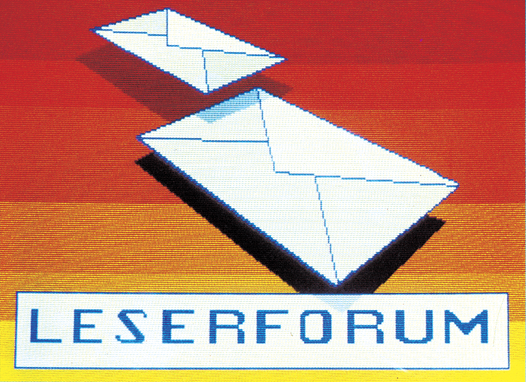

DIM-Anweisung aufheben?
Wer weiß, wie man eine DIM-Anweisung in einem Basic-Programm wieder aufheben kann, um ein Feld neu definieren zu können? Andere Felder und Variablen müssen erhalten bleiben.
Bremse für Textomat+
Wer kennt eine Möglichkeit, das Textprogramm Textomat+ beim Druck an einer definierten Stelle anzuhalten, um das Typenrad der Schreibmaschine Triumph-Adler Gabriele 9009 zu wechseln?
Zeichensatz verändern und speichern?
Ich möchte den Zeichensatz irgendwo im Bereich von $5000 bis $A000 unterbringen. Es ist mir zwar gelungen, ihn nach $3000 zu verschieben, indem ich den Bereich von $D000 bis $DFFF nach $3000 kopiert habe und dann den Wert 29 ins Register 24 des VIC geschrieben habe. Für Basic-Programme steht mir dann aber nur noch der Bereich von $0800 bis $2FFF zur Verfügung. Mein Programm geht aber über diesen Bereich hinaus. Wer kann mir helfen? Wie muß ich die CIA-Register (welche?) verändern um den Zeichensatz an eine andere Adresse legen zu können?
C 64 als Handheld
Ein Handheld-Computer mit brauchbaren Leistungsmerkmalen ist mir zu teuer und möchte deshalb meinen C 64 in ein tragbares System umbauen. Allerdings ist es mir, trotz intensiven Suchens in Elektronikkatalogen und Computerläden nicht gelungen, eine Bezugsquelle für ein LCD-Display herauszubekommen. Wer kennt eine Bezugsquelle oder hat eventuell schon Erfahrungen mit dem Anschluß von LCD-Displays an den C 64.
Wer hat 1525-Treiber für Hypra-Platos?
Mit dem Drucker Okimate 20 (im Schwarzweiß-Modus hat er die gleichen Steuercodes wie ein 1525) kann man Klarsichtfolien bedrucken. Es wäre nun genial, könnte man ein mit Hypra-Platos erstelltes Programm gleich im Maßstab 1:1 auf Klarsichtfolie drucken. Wer hat einen VC 1525-Druckertreiber zu Hypra-Platos geschrieben?
Arbeitet Superbase mit der SFD 1001?
Zur Archivierung meiner Schallplatten, Bücher etc. nehme ich meinen C 64 und das Programm Superbase. Seit geraumer Zeit wird allerdings der Speicherplatz der 1541-Floppy zu knapp. Deshalb meine Frage: Arbeitet Superbase auch mit einer SFD 1001 zusammen, oder läßt sich wirklich nur die 1541 verwenden?
Kudiplo und Panasonic-Drucker
Aus Ausgabe 3/86 habe ich das Programm Kudiplo abgetippt und habe Schwierigkeiten mit der Hardcopy-Routine. Mein Drucker ist ein Panasonic KX-P1090, angeschlosssen über ein Merlin C +-Interface. Wer kann mir helfen?
C 64 als Tachometer
Ich möchte die Geschwindigkeit vorbeifahrender Autos mit dem C 64 genau messen, da Stoppuhren zu ungenau sind. Wer kann mir helfen? Ich bin elektronischer Laie.
Wordpro 3+ und Seikosha GP-500VC
Ich habe Probleme mit dem Programm Wordpro 3+. Der Drucker Seikosha GP-500VC schaltet bei Wordpro 3+ nicht in den Groß-/Kleinschriftmodus um. Das führt dazu, daß nur Großbuchstaben ausgedruckt werden, während die Kleinbuchstaben als Grafikzeichen dargestellt werden. Wie läßt sich dieses Problem lösen?
Wer kennt Olympia Carrera?
Wer hat Erfahrungen mit der Typenradschreibmaschine Olympia Carrera und weiß, wie man die Maschine mit dem Programm Vizawrite auf dem C 64 zum Laufen bekommt?
Ausgabe 7/86
Seit einiger Zeit benutze ich Vizawrite 64 auf dem C 64 mit der Olympia Carrera als Typenraddrucker. Für den Betrieb der englischen Vizawrite-Version ist nur der Anschluß der seriellen Interface-Box nötig. Diese Interface-Box muß für die deutsche Version von Vizawrite, wegen der Umlaute, abgeändert werden. Gegen Einsendung eines Unkostenbeitrages von sechs Briefmarken á 80 Pfennigen bin ich gerne bereit, eine genaue Beschreibung der Änderungen zuzuschicken. Wenden Sie sich an:
CP/M-Software übertragen
Seit einigen Monaten besitzte ich einen C 128D. Nun habe ich die Möglichkeit, billig an CP/M-Software zu kommen. Leider ist es nicht möglich die Programme zu laden, da die 1571-Floppy das Format nicht verarbeiten kann. Ist es möglich, mit Ihrem RS232-Selbstbau-Interface aus Ausgabe 3/85 die Programme zu übertragen?
Normalerweise ist es kein Problem, ungeschützte Programme zwischen zwei CP/M-Computern zu übertragen. Dazu lädt man auf beiden Computern ein Terminalprogramm, wie zum Beispiel Kermit (Freeware). Mit dem Kermit können nun ganz leicht komplette Dateien zwischen den beiden Computern übertragen werden. Während der eine Computer die Datei von Diskette liest, schreibt sie der andere in seinem Diskettenformat auf Diskette. Die beiden Computer werden über die RS232-Schnittstellen mit einem Nullmodem (Leitung 2 und 3 gekreuzt) verbunden.
Das Problem das sich beim C 128 stellt, ist das Fehlen von RS232-Routinen im BIOS. Ein Programm wie Kermit läuft deshalb nicht auf dem C 128.
Eine Verbesserung ist bei Commodore in Vorbereitung. Da das CP/M-System von Diskette gebootet wird, sollten keine Eingriffe an der Hardware nötig sein, um auch bei älteren C 128 eine RS232-Schnittstelle nachzurüsten.
SX 64 an der Autobatterie
Ich möchte meinen tragbaren Commodore SX 64 auf 12V Spannungsversorgung (Akku, Autobatterie) umrüsten. Wo kann ich eine Bauanleitung bekommen und wer hat Erfahrungen im Umrüsten beziehungsweise nimmt den Umbau vor?
Ausgabe 6/86
Statt eines Umbaus des SX 64 empfehle ich einen Wechselrichter, der aus 12 V Gleichspannung 220V Wechselspannung macht. Solche Geräte werden meist zum Anschluß von Bohrmaschinen und anderen 220V-Werkzeugen an die Autobatterie hergenommen. Die Wechselrichter gibt es fertig zu kaufen und kosten meines Wissens um 150 Mark. Sie liefern etwa drei Ampere Ausgangsstrom und dürften für den SX 64 deshalb mehr als ausreichen.
Echtzeituhr geht falsch
Warum laufen die CIA-Echtzeituhren am SX 64 trotz richtiger Programmierung pro Minute etwa zehn Sekunden zu schnell, und wie kann man den Fehler beheben?
Ausgabe 7/86
Wahrscheinlich haben Sie das 50-Hz-Bit in der CIA gesetzt. Beim SX 64 muß es aber gelöscht sein. Wenn Sie, wie beim C 64, POKE 56576+14, PEEK (56576+14) OR 128 eingeben, geht die Uhr des SX 64 pro Minute 10 Sekunden vor. Irgendwie scheint die CIA des SX 64 mit 60 Hz getaktet zu werden. Ansonsten könnte die Uhr niemals zu schnell laufen.
1541-Wärmeprobleme gelöst?
Besteht die Möglichkeit, die bei der Floppy-Station 1541 ab und zu auftretenden Wärmeprobleme zu beseitigen?
Ausgabe 7/86
Abhilfe schafft ein Ventilator, der das Laufwerk kühlt.
Flache Ventilatoren gibt es in Elektronikläden für etwa 20 Mark aufwärts. Man sollte darauf achten, daß kollektorlose Motoren zur Vermeidung von Störungen und Krach verwendet werden. Häufig findet man solche Lüfter auch in Endstufen leistungsstarker Hi-Fi-Verstärker oder in Computern.
Ein anderer Tip: Der Netztrafo der 1541 besitzt einen Abgriff für 240 und 220 Volt. Wenn Sie den Trafo über den 240 V-Abgriff ans Netz anschließen, wird das Laufwerk nicht mehr so heiß.
Achtung: Einen solchen Eingriff sollte nur ein Fachmann vornehmen, da Netzspannung lebensgefährlich ist!
Technischer Defekt
Von Zeit zu Zeit macht mein C 64 von sich aus einen Reset. Wer kann helfen?
Ausgabe 7/86
Dieser Fehler trat bei einem Kollegen von mir auf. Mit einem Netzfilter (gibt es in Elektronikshops) konnte der Fehler beseitigt werden.
Ich habe einfach die Resetleitung am Stecker des Floppykabels, der am Computer angeschlossen wird, durchgezwickt. Leuchtstoffröhren machen meinem C 64 jetzt nichts mehr aus. Ein ähnlicher Tip steht unter Tips & Tricks im 64'er, Ausgabe 8/86.
Spiel-Probleme
(1) Das Spiel »Springvogel« aus dem 64'er-Magazin stürzt bei Verwendung von Turbo-Tape ab. Was kann man dagegen tun?
(2) Beim Grab des Pharao kommt ich nicht weiter. Ich bin in der Pyramide. Wenn ich eine der Türen öffne oder zerstöre, öffnet sich jedesmal eine Falltüre.
Ausgabe 7/86
(1) Springvogel läuft mit Turbo Tape, wenn folgende zwei Zeilen an den Anfang des Listings gesetzt werden:
1 POKE828,169: POKE829,228: POKE830,141: POKE831,8: POKE 832,3: POKE833,169
2 POKE834,167: POKE835,141: POKE836,9: POKE837,3: POKE838,96: POKE839,0: SYS 828
Mit den beiden Zeilen wird Turbo Tape abgeschaltet. Nach dem Start des Programms kann Turbo Tape nicht mehr genutzt werden.
(2) Hier eine Teillösung für das Grab des Pharao
GEHE O, NIMM SPITZHACKE, GEHE N, FRAGE BEDUINE, GEHE O, GEHE N, HACKE STRAUCH, ZERSTOERE EINGANG, KRIECHE DURCHGANG, GEHE W, GEHE W, NIMM STATUE, ZIEHE HEBEL, VERLIERE STATUE, GEHE W, GEHE N, NIMM SEIL, GEHE O, ZERSTOERE WAND, KRIECHE GEHEIMGANG, GEHE N, GEHE N, ZERSTOERE PFEIL, OEFFNE TUER, GEHE N.
Ein Tip: Klopfen Sie an die Wand im Osten.
Formel 64 und Textomat+
In Ausgabe 11/85 wurde das Modul Formel 64 der Firma Grewe vorgestellt. Unter anderem steht da, daß das Modul mit Textomat + läuft. Bei mir ist das aber nicht der Fall. Der Ladevorgang bricht nach etwa 10 Sekunden ab.
Wir haben Formel 64 mit Textomat+ getestet und beides war miteinander verträglich. Zwei Dinge könnten der Grund dafür sein, warum bei Ihnen Textomat+ nicht läuft:
1. Die Firma Grewe hat die Software des Moduls Formel 64 seit unserem Test verändert, oder
2. Data Becker verwendet inzwischen einen anderen Kopierschutz bei Textomat+.
Fernseher und Monitor gleichzeitig anschließen?
(1) Kann ich ein Fernsehgerät (über TV-Buchse) und einen 1701-Monitor (über Video/Audiobuchse) gleichzeitig an den C 64 anschließen und beide gleichzeitig in Betrieb haben?
(2) Wenn ja, darf das Fernsehgerät ein- oder ausgeschaltet werden, wenn der Computer eingeschaltet ist?
(1) Sie dürfen ohne weiteres ein Fernsehgerät und einen Monitor gleichzeitig an den C 64 anschließen. Eine Überlastung des C 64 kann dadurch nicht entstehen.
(2) Selbstverständlich können Sie das Fernsehgerät nach Belieben ein- und ausschalten. Am C 64 geht dabei mit Sicherheit nichts kaputt. Wenn Sie Pech haben, kann der Einschaltvorgang des Fernsehgeräts einen Reset auslösen. Aber das läßt sich ausprobieren.
Reset-Taster für alle Fälle
(1) In Ausgabe 6/85 haben Sie einen Reset-Taster veröffentlicht, der bei mir allerdings nicht so recht funktioniert. Nach einem Reset erscheint die Einschaltmeldung, aber der C 64 reagiert auf keinen Tastendruck mehr. Woran liegt das?
(2) Ich habe mir einen Reset-Taster für den seriellen Port gekauft, habe allerdings keinen Erfolg damit. Der Taster zeigt keine Wirkung.
(1) Das Problem liegt am Taster. Wahrscheinlich haben Sie einen Typ verwendet, der nicht prellfrei ist. Durch das Prellen bekommt der C 64 eine Reihe von Resetimpulsen sehr schnell hintereinander. Das kann zu einem undefinierten Einschaltzustand und damit zu einem »Absturz« führen. Während des Prellens öffnet und schließt sich der Kontakt sehr schnell, bis sich die Kontaktfedern beruhigt haben. Bevor Sie sich aber nun einen anderen Taster holen, nehmen Sie anstelle des 47 µF-Kondensators mal einen 1 µF-Typ. In den meisten Fällen funktioniert dann der »Reset-Taster für alle Fälle« auch mit einem prellenden Taster.
(2) An vielen neuen C 64 funktionieren Reset-Taster nicht mehr, weil die Resetleitung am seriellen Bus nur noch in eine Richtung funktioniert — nämlich vom Computer zum Laufwerk und nicht zurück. Am seriellen Port läßt sich deshalb kein Reset am Computer mehr auslösen. Durch diese Maßnahme hat man das Phänomen, daß der C 64 beim ein- und ausschalten bestimmter Verbraucher einen Reset macht, in den Griff bekommen.
Aus alt mach neu?
Kann man den alten C 64 in das neue Gehäuse einbauen?
Mit etwas handwerklichem Geschick kann man den alten C 64 in das neue Gehäuse einbauen. Schwieriger wird es allerdings, ein leeres neues Gehäuse mit den dazu passenden Abschirm- und Kühlblechen zu bekommen.
Modem mit Wählautomatik
Ihr »Modem mit Wählautomatik« hat mich sehr interessiert. Einige Fragen hätte ich allerdings dazu:
(1) Wie ist die Firma HW-Elektronik telefonisch zu erreichen? Die Auskunft konnte mir keine Telefonnummer unter diesem Namen nennen.
(2) Welches Übertragungsverhältnis hat Transformator Ü1?
(3) Können Sie mir die genaue Adresse von der Firma Steinkühler geben?
(1) Die Rufnummer der Firma HW-Elektronik ist 040/4396848.
(2) Der Übertrager Ü1 hat laut Aussage des Autoren das Übertragungsverhältnis 1:1. Die Firma Steinkühler (Bezugsquelle für dieses Bauteil) ist unter der nachstehenden Adresse zu erreichen.
(3) Firma Steinkühler, Im Rubbenklee 8, 4900 Herford, Tel. 05221/ 73011
Dort können sie gegen Vorkasse (Scheck) den Übertrager für 11,40 Mark erhalten.
Fragen zum System
(1) Nach dem Einschalten des C 64 erscheint im Titelbild »... 38911 Bytes Free«. PRINT FRE(0) +2^16 liefert aber 38909. Wo sind die restlichen zwei Bytes?
(2) Wieviel Blocks belegen 10 KByte auf Diskette?
(3) Welche POKEs muß man eingeben, um den Multicolor-, Grafik- und Textmodus einzuschalten?
(4) Wie berechnet sich die Startadresse für einen umdefinierten Zeichensatz? Welche Werte muß man ins Register 53272 POKEn, um die gewünschte Adresse einzustellen?
(1) Die zwei fehlenden Bytes werden vom Computer als Basic-Ende-Erkennung benötigt. Das sind zwei Null-Bytes in den Speicherstellen 2049 und 2050. In der Resetroutine werden diese »Nullen« nicht berücksichtigt.
(2) 10 KByte belegen 41 Blocks. Runden Sie einfach den Bruch (Anzahl der Bytes/254) auf und Sie wissen die Blockanzahl.
(3) und (4) Hier möchten wir Sie auf entsprechende Literatur verweisen, besonders auf unseren Grafikkurs.